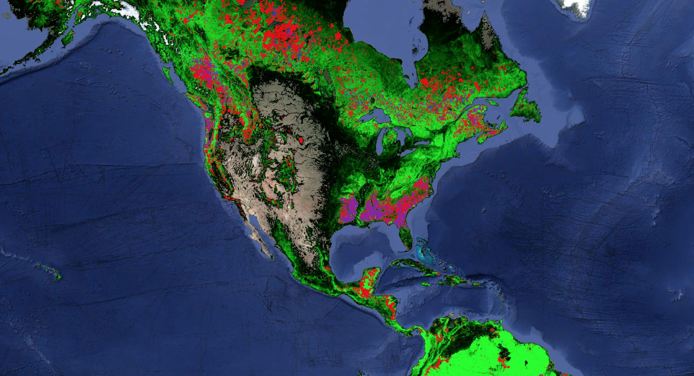
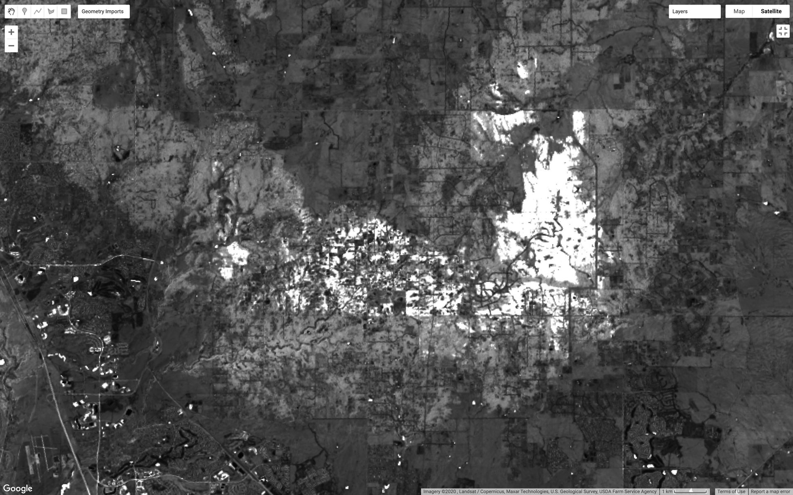

methods
The official fire perimeter map shows the greatest extent of the fire. However, there are many pockets of healthy forest inside the fire perimeter. I needed another source of data that could show the burned areas more directly.
I looked to use remote sensing data as the record covers the time periods of change, and the spatial resolution would be high enough. For processing, I used Google Earth Engine. It's a powerful tool that aggregates remote sensing datasets, and also provides a framework to do large scale data processing in the cloud. Unfortunately, the python API is quite challenging for me to use in my typical mindset of local data processing, and it seems like a second-class citizen to their JavaScript API. So, I used the JavaScript API through the Earth Engine Code Editor for this project.
I searched for an appropriate remote sensing dataset that might capture the change in vegetation. Initially, I anticipated using a normalized difference vegetation index (NDVI) which uses the ratio of infrared to red light to detect the presence and amount of vegetation. Here, you can see a visualization of NDVI in Black Forest throughout 2013. The dark green area in the center is Black Forest, and you can see a lighter scar emerge following the fire.

NDVI of Black Forest: 1/2013-1/2014
NDVI could be used for this analysis, but I found the
Global Forest Change dataset from Hansen et al. This uses data from Landsat 8, and marks changes in forest density from a reference baseline in the year 2000. The data clearly shows regions of forest loss, and forest gain. It's astonishing to be able to instantly get a snapshot of forest change at a 30m resolution across the globe.

Forest coverage and change in North America from the Hansen dataset - Green: Forest cover, Red: Forest loss, Blue: Forest gain
After limiting the data to the Black Forest area, the burn scar becomes apparent.
The burn scar can also be seen in the Landsat Burned Area Index dataset from August of 2013. White areas represent a burned classification.

Landsat Burned Area Index data of Black Forest in August, 2013
Next, I wanted to convert this raster pixel data into a vector format for display on a stylized map. In order to do this, I needed to convert the pixel layer to a vector form in Google Earth Engine. The vector data still had retained the pixel artifact structure, so I exported the GeoJSON data to QGIS, and then filtered the small regions, smoothed the edges using a "snakes" generalization algorithm, and removed any islands. This smoothing and filtering took much longer than the remote sensing part! Below, you can see the vector output before and after filtering.